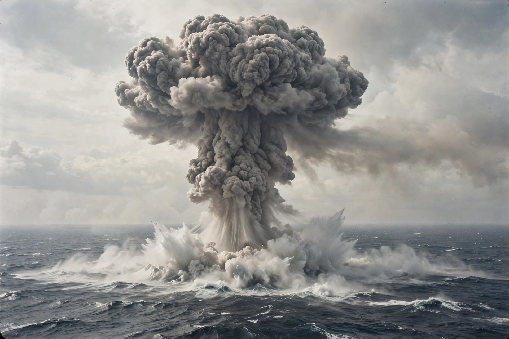

From Wikipedia, the free encyclopedia

Mutual assured destruction (MAD) is a doctrine of military strategy and national security policy which posits that a full-scale use of nuclear weapons by an attacker against a nuclear-armed defender with second-strike capability would cause the complete annihilation of both the attacker and the defender. It is based on the theory of rational deterrence: because no side can escape devastation, neither will rationally initiate a nuclear war.
The underlying idea was anticipated before the nuclear age — the phrase "assured destruction" was formalised in the 1960s under US Secretary of Defense Robert McNamara, who quantified it as the capability to destroy a set fraction of an enemy's population and industrial capacity even after absorbing a surprise attack. The apt acronym MAD is generally credited to Donald Brennan, a critic of the doctrine at the Hudson Institute, who coined it to ridicule the concept.
MAD rests on invulnerable retaliatory forces, above all ballistic-missile submarines that can hide in the oceans and guarantee a devastating response. It deliberately holds cities hostage ("countervalue" targeting) and, in its pure form, opposes missile defences that might weaken an adversary's retaliatory capacity — reasoning embedded in the 1972 Anti-Ballistic Missile Treaty between the United States and the Soviet Union.
Critics have called the doctrine morally indefensible, strategically rigid — offering a president facing limited aggression only the choice between suicide and surrender — and dependent on perfect rationality and accident-free warning systems. War-fighting alternatives such as counterforce targeting and flexible response sought escape from its logic. Although arsenals have shrunk since the Cold War, the mutual vulnerability of the major nuclear powers remains a structural feature of international security, and MAD's logic is often invoked in analysis of new nuclear dyads in South Asia and East Asia.